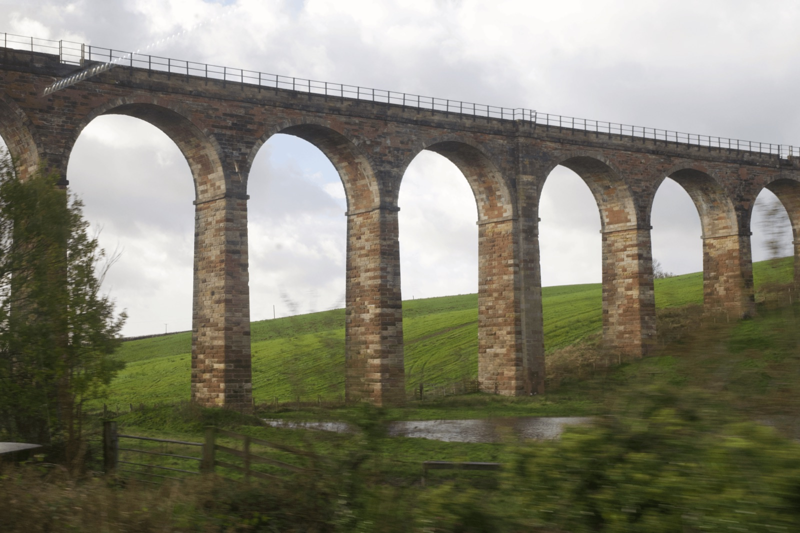

经过英国与欧洲多地拍摄、剪辑、后期与视觉开发，完成一部24分钟影像，并围绕通信历史持续进行相关技术实验。
代表项目 / 01Film / 2026

AI Creative / Visual Content / Creative Technology
RCA当代艺术实践硕士背景。以研究与影像为基础，独立推进视觉项目，并持续实践AI辅助内容生产。

AI Content Production Workflow
将研究、AI辅助草拟与视觉生产连成流程，在自动化中保留人工判断和编辑控制。
计划通过一个30–60秒案例，记录从分镜、一致性控制到人工后期的生成视频制作过程。
以研究建立内容，以影像完成表达，
把AI与创意技术带入制作过程。
我拥有RCA当代艺术实践硕士背景，能够独立推进从研究、拍摄到剪辑与后期的视觉项目。正在实践AI辅助内容生产，并重点发展AI视频与稳定生成工作流。
艺术史、数字媒介与地缘研究持续影响我的创作，也构成视觉判断与内容开发的方法。
查看完整艺术与研究档案 ↗MA Contemporary Art Practice
英国皇家艺术学院 · 当代艺术实践
BA Digital Media Art · 数字媒体艺术
本科均分 84 / 100
实践AI图像与内容生产、LLM辅助工作流；正在探索AI视频与生成一致性。
摄影、剪辑与后期制作；使用Premiere Pro、After Effects、Photoshop完成视觉表达。
实践过TouchDesigner、WebGL / Three.js、Unreal Engine与Arduino相关实验。
实践Vibe Coding、内容工作流与快速原型，在自动化中保留人工审核。
关注2027校招，以及AI视觉内容、生成视频、Creative R&D与游戏创意内容相关机会。